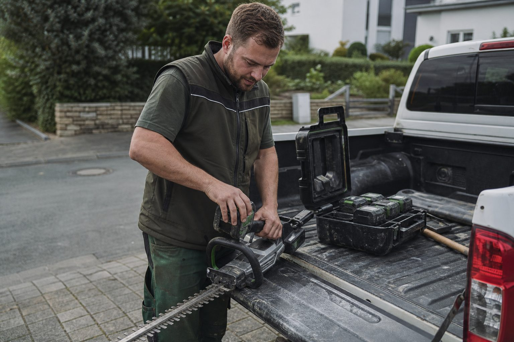
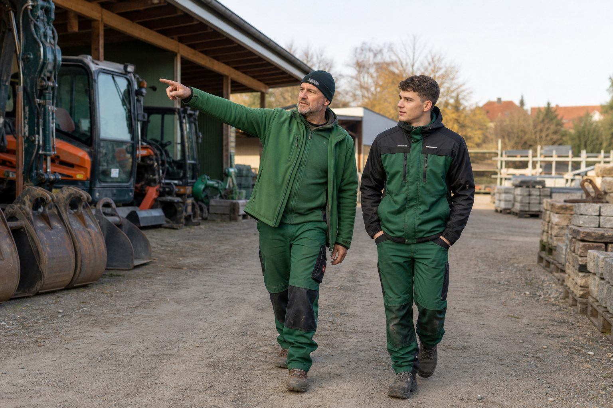
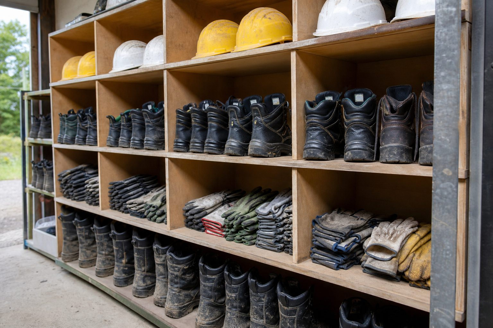

Der BGL befragt seine Mitgliedsbetriebe zweimal im Jahr zur Konjunktur. An der Frühjahrsumfrage 2026 haben sich 699 Betriebe aus den elf Landesverbänden beteiligt. Das Ergebnis ist zweigeteilt: Die Nachfrage hält, die Zufriedenheit sinkt.
Geschäftslage: von 65 auf 51,8 Prozent
51,8 Prozent der Betriebe bewerten ihre gegenwärtige Geschäftslage als gut. Im Frühjahr 2025 waren es noch 65 Prozent. 40,1 Prozent nennen die Lage befriedigend (2025: 32,1 Prozent), 8,2 Prozent schlecht (2025: 2,8 Prozent). Der Anteil der Betriebe mit schlechter Lage hat sich damit fast verdreifacht – von niedrigem Niveau aus.
| Geschäftslage | Frühjahr 2026 | Frühjahr 2025 |
|---|---|---|
| gut | 51,8 % | 65,0 % |
| befriedigend | 40,1 % | 32,1 % |
| schlecht | 8,2 % | 2,8 % |
Erwartungen: mehr Skepsis für das zweite Halbjahr
Für die kommenden sechs Monate rechnen 7,3 Prozent mit einer günstigeren Entwicklung, 70,5 Prozent mit einer gleichbleibenden und 22,2 Prozent mit einer ungünstigeren. Im Vorjahr lag der Anteil der Pessimisten bei 12,5 Prozent. Die Auftragslage widerspricht dieser Stimmung nur teilweise: Zwei Drittel der Betriebe bewerten sie als gleich gut oder besser als im Vorjahr, ein Drittel berichtet von einer schlechteren Lage. Die Auslastung liegt in Pflege und Neubau bei jeweils 18 Wochen.
Ertragslage: der eigentliche Befund
65,2 Prozent der Betriebe bewerten ihre Ertragslage als unbefriedigend oder verbesserungsbedürftig. Nur 34,8 Prozent sagen, die Gewinne entsprächen den Erwartungen. Zusammen mit der stabilen Auftragslage ergibt das ein klares Bild: Es wird gearbeitet, aber es bleibt zu wenig hängen. Die Betriebe beschäftigen im Schnitt 22 Mitarbeiter; 48 Prozent haben ihre Mitarbeiterzahl im Jahresverlauf angepasst, überwiegend moderat.
„Der GaLaBau zeigt sich auch unter schwierigen wirtschaftlichen Rahmenbedingungen noch immer robust”, sagt BGL-Präsident Thomas Banzhaf.
Langfristig bleibt die Branche optimistisch
84,2 Prozent geben dem Jahr 2026 die Schulnoten 1 bis 3. 81,5 Prozent rechnen für die kommenden fünf Jahre mit einer positiven Entwicklung, 88,5 Prozent bewerten ihre aktuelle betriebliche Situation positiv. Die Schere zwischen kurzfristiger Stimmung und langfristiger Zuversicht ist typisch für eine Branche, die von Klimaanpassung, Städtebau und privater Nachfrage getragen wird – und deren Engpass nicht die Nachfrage ist, sondern die Kapazität.
- Bundesverband Garten-, Landschafts- und Sportplatzbau e. V. (BGL): Frühjahrsumfrage 2026 unter 699 Mitgliedsbetrieben, veröffentlicht 28. Mai 2026, zitiert nach B_I galabau – bau.bi/galabau/nachrichten/fruehjahrsumfrage-2026-darum-t...
- Messe Nürnberg: Trendbarometer der GaLaBau 2026 (Fachkräftemangel bei Bauleitern) – www.galabau-messe.com/de-de/presse/pressemitteilungen/202...
STIHL AP 500 S: Der Akku, der das Profi-System ausdauernd macht
36 Volt, 8,8 Amperestunden, 337 Wattstunden, 1,9 Kilogramm – und nach Herstellerangaben doppelt so viele Ladezyklen wie bisherige Akkus. Was das für Betriebe bedeutet, die ihre Kolonnen auf Akku umstellen.

- Ein Akku für Heckenschere, Freischneider, Blasgerät und Motorsäge im AP-System; der AP 500 S liefert 337 Wattstunden bei 1,9 Kilogramm.
- Neue Zelltechnik (Power Laminat) verdoppelt laut STIHL die Zahl der möglichen Ladezyklen – der Akku ist damit eine Investition über Jahre, nicht über eine Saison.
- Der Umstieg lohnt sich für Pflegebetriebe mit Wohngebieten und Lärmauflagen; er scheitert in der Praxis an fehlenden Lademöglichkeiten im Fahrzeug, nicht am Gerät.
- Hersteller
- STIHL, Waiblingen
- Kategorie
- Profi-Akku für das AP-System (Heckenscheren, Freischneider, Blasgeräte, Motorsägen, Rasenmäher)
- Technische Daten
- 36 Volt, 8,8 Ah (nach IEC 61960), 337 Wh, 1,9 kg, vier LEDs für den Ladezustand
- Zelltechnik
- Power Laminat; laut Hersteller doppelt so viele Ladezyklen wie bisherige STIHL-Akkus
- Schutz
- Spritzwasserschutz der Systemgeräte an IPX4 orientiert
- Preis
- Fachhandel; Preise je nach Händler und Set (Preisangaben schwanken, daher hier keine Zahl)
- Für wen
- Pflegebetriebe, die Kolonnen komplett auf ein Akkusystem umstellen und Geräte über Jahre nutzen
- Stand
- Herstellerangaben und Fachpresse, abgerufen September 2026
Der Streit um Akku oder Benzin ist im Pflegebetrieb entschieden – nicht durch Überzeugung, sondern durch die Kunden. Wohnungsverwaltungen, Kommunen und Gewerbekunden verlangen leise Geräte, die Lärmschutzverordnung setzt für Laubbläser und Freischneider in Wohngebieten enge Zeitfenster, und die Kolonnen wollen keine Abgase mehr in der Hecke. Die Frage ist nur noch, welches System – und ob der Akku den Tag durchhält.
Der Akku
Der AP 500 S ist der ausdauerndste Akku im STIHL-Profisystem AP: 36 Volt, 8,8 Amperestunden nach IEC-Norm, 337 Wattstunden, 1,9 Kilogramm. Vier LEDs zeigen den Ladezustand. Die entscheidende Neuerung sitzt in der Zelle: Mit der Power-Laminat-Technik verdoppelt der Hersteller nach eigenen Angaben die Zahl der möglichen Ladezyklen gegenüber bisherigen Akkus. Für den Betrieb heißt das, dass ein Akku, der täglich zweimal geladen wird, nicht nach zwei Saisons ausgetauscht werden muss.
Das AP-System deckt die gesamte Profi-Linie ab: Heckenscheren, Freischneider, Blasgeräte, Motorsägen, Rasenmäher. Ein Akkutyp für alle Geräte ist der Grund, warum sich Betriebe für ein System entscheiden und nicht für das jeweils beste Einzelgerät.
Die Rechnung
Ein Akku ersetzt keinen Kanister. Für eine Kolonne, die den ganzen Tag Hecken schneidet, braucht es drei bis vier Akkus im Wechsel und ein Ladegerät im Fahrzeug – am besten mit Wechselrichter oder einer zweiten Batterie, damit der Motor nicht laufen muss. Wer nur Geräte kauft und die Ladefrage dem Zufall überlässt, hat mittags leere Akkus und einen Vorarbeiter, der zum Benzingerät greift.
Grenzen
Auf großen Flächen mit schwerem Freischneidereinsatz den ganzen Tag ist Benzin weiterhin die Reserve, die viele Betriebe im Fahrzeug behalten. Die Spritzwasserfestigkeit der Systemgeräte ist an IPX4 orientiert – Regen ja, Hochdruckreiniger nein. Und Preise: Die Sets kosten mehr als die Benzingeräte; Händler und Aktionen unterscheiden sich so stark, dass wir hier keine Zahl nennen.
Für wen
Für Pflegebetriebe mit Wohnanlagen, Kommunen und Gewerbekunden, die Lärm und Abgas vermeiden wollen oder müssen. Für Betriebe, die ihre Geräteflotte in den nächsten zwei Jahren ohnehin erneuern. Und für jeden Vorarbeiter, der abends keinen Benzingeruch mehr an den Händen haben will.
- bauhandwerk: Leistungsstarker Akku STIHL AP 500 S (Power Laminat, doppelte Ladezyklen) – www.bauhandwerk.de/artikel/bhw_Leistungsstarker_Akku_-Sti...
- Stückrad: STIHL Akku AP 500 S 36 V / 8,8 Ah (technische Daten: 337 Wh, 1,9 kg, IEC 61960) – www.stueckrad.de/Akku-Lithium-Ionen-AP-500-S-36-V-8-8-Ah/...
Die ersten 90 Tage: Warum neue Mitarbeiter im GaLaBau in der Probezeit gehen
Die Suche war lang, der Vertrag ist unterschrieben – und nach sechs Wochen kündigt der neue Landschaftsgärtner. Meist liegt es nicht an ihm. Ein Plan für die ersten drei Monate, der sich in Betrieben bewährt hat.

- 166 Tage dauert eine Besetzung im Baugewerbe – geht der Neue nach sechs Wochen, beginnt die Rechnung von vorn.
- Das Muster: nicht eingeplant, falsche Kolonne, keine Regeln erklärt, niemand fragt nach – nach sechs Wochen ruft der alte Betrieb an.
- Ein Plan über 90 Tage mit Nachricht vor dem ersten Tag, vorbereitetem Platz, festem Ansprechpartner und regelmäßigen Gesprächen macht aus der Formalität eine soziale Aufgabe.
Eine Stelle im Baugewerbe zu besetzen dauert im Schnitt 166 Tage, sagt die Bundesagentur. Wenn der neue Mitarbeiter dann nach sechs Wochen wieder geht, beginnt die Rechnung von vorn – und die meisten Betriebe wissen nicht einmal, warum. Gespräche mit Betriebsinhabern und Vorarbeitern zeigen ein Muster: Es liegt selten am Gehalt, häufig am Anfang.
Was in den ersten Wochen schiefgeht
Der neue Kollege kommt am Montag um sieben auf den Hof, niemand hat ihn eingeplant, der Chef ist auf einer Baustelle. Er fährt mit irgendeiner Kolonne mit, bekommt eine Schaufel und erfährt am Mittwoch beiläufig, dass er eigentlich für die Pflasterkolonne gedacht war. Nach zwei Wochen kennt er die Namen, aber nicht die Regeln: Wer bestellt Material, wer entscheidet auf der Baustelle, wann ist Feierabend, was passiert bei Regen? Nach vier Wochen hat er den Eindruck, dass es keinen interessiert, ob er bleibt. Nach sechs Wochen ruft der alte Betrieb an.
Ein Plan für 90 Tage
Vor dem ersten Tag. Der Neue bekommt eine Woche vorher eine Nachricht: Wann, wo, bei wem er sich meldet, was er mitbringt, mit welcher Kolonne er startet. Kleidung und Ausrüstung liegen bereit, der Name steht auf dem Spind.
Tag 1. Der Inhaber oder Bauleiter ist da. Eine halbe Stunde Rundgang, Vorstellung im Team, dann die Kolonne, in der er die ersten vier Wochen bleibt – nicht wechselnd. Ein fester Ansprechpartner (Pate) wird benannt: ein erfahrener Mitarbeiter, der Fragen beantwortet, die man dem Chef nicht stellt.
Woche 1. Sicherheitsunterweisung, Maschineneinweisung, die ungeschriebenen Regeln des Betriebs. Am Freitag ein kurzes Gespräch mit dem Paten: Was war gut, was fehlt?
Woche 4. Gespräch mit dem Inhaber oder Bauleiter: Wie läuft es, was hat der Neue erwartet, was hat er vorgefunden? Jetzt kommen die Punkte auf den Tisch, die sonst zur Kündigung führen.
Woche 8. Erste eigene Verantwortung: ein Teilbereich der Baustelle, eine Maschine, ein Lehrling, der ihm zugeordnet wird. Wer Verantwortung bekommt, bleibt.
Woche 12. Probezeitgespräch mit Entscheidung – und mit dem Blick nach vorn: Was sind die nächsten Schritte im Betrieb, welche Weiterbildung, welche Rolle in der nächsten Saison?
Was das kostet
Rund vier Stunden Zeit des Inhabers oder Bauleiters, verteilt auf drei Monate, und die Bereitschaft eines erfahrenen Mitarbeiters, Pate zu sein. Gegenüber 166 Tagen erneuter Suche ist das die günstigste Personalmaßnahme, die ein Betrieb ergreifen kann.
- Institut der deutschen Wirtschaft (IW): Arbeitnehmer kündigen zunehmend selbst, 22. April 2025 (Eigenkündigungen 52 %) – www.iwkoeln.de/studien/holger-schaefer-arbeitnehmer-kuend...
- Bundesagentur für Arbeit: Monatsbericht Januar 2026 (abgeschlossene Vakanzzeit 166 Tage) – statistik.arbeitsagentur.de/Statistikdaten/Detail/202601/...
Bobcat E10e: Ein-Tonnen-Bagger für Türen, Keller und Innenhöfe
710 Millimeter breit, knapp 1,2 Tonnen schwer, elektrisch: Der E10e passt durch jede Tür und arbeitet, wo kein Diesel darf. Was er leistet, wie er lädt und für welche Betriebe er die Miete wert ist.

- Ein-Tonnen-Klasse mit 710 Millimetern Betriebsbreite und rund 1.200 Kilogramm Gewicht – die Maschine passt durch Standardtüren und lässt sich mit dem Kran versetzen.
- Laut Hersteller hält der Akku einen Acht-Stunden-Tag durch, wenn in den normalen Pausen nachgeladen wird; mit externem Supercharger sind 80 Prozent in etwa einer Stunde erreicht, über Nacht lädt er an 230 Volt.
- Gebaut für Innenräume, Abbruch im Bestand und enge Höfe – nicht für den Erdbau im offenen Gelände.
- Hersteller
- Bobcat (Doosan Bobcat EMEA), Dobříš, Tschechien
- Kategorie
- Elektrischer Minibagger, 1-t-Klasse
- Abmessungen
- Betriebsbreite 710 mm, Eigengewicht knapp 1.200 kg
- Antrieb
- Wartungsfreie Lithium-Ionen-Akkus im Standardrahmen, emissionsfrei
- Laden
- Externer Supercharger: rund 80 Prozent in etwa einer Stunde; internes Ladegerät: über Nacht an 230 Volt
- Einsatzdauer
- Nach Herstellerangabe ein Acht-Stunden-Tag mit Nachladen in den Arbeitspausen
- Preis
- Auf Anfrage über Bobcat-Händler; verbreitet im Mietpark
- Für wen
- Betriebe mit Arbeiten in Gebäuden, Kellern, Innenhöfen und Bereichen mit Abgas- oder Lärmverbot
- Stand
- Herstellerangaben, abgerufen September 2026
Der Bobcat E10e war einer der ersten vollelektrischen Minibagger auf dem Markt und ist heute der Klassiker in der Ein-Tonnen-Klasse. Seine Stärke ist nicht die Leistung, sondern das Format: 710 Millimeter Betriebsbreite, knapp 1.200 Kilogramm Eigengewicht. Er fährt durch eine Terrassentür, steht im Keller eines Altbaus und lässt sich mit dem Kran über die Mauer heben.
Der Arbeitstag
Bobcat verspricht einen Acht-Stunden-Tag mit einer Akkuladung, wenn in den üblichen Arbeitspausen nachgeladen wird. Dafür braucht es den externen Supercharger, der rund 80 Prozent der Kapazität in etwa einer Stunde nachlädt; das interne Ladegerät füllt den Akku über Nacht an einer 230-Volt-Steckdose. Für Innenraumbaustellen ist das ein realistisches Konzept: Frühstückspause und Mittag reichen, um den Nachmittag zu sichern. Für einen Tag im offenen Gelände ohne Strom ist die Maschine nicht gedacht.
Die Akkus sitzen im Standardrahmen des Diesel-Modells, deshalb bleibt die Maschine so kompakt wie das Original. Sie ist wartungsfrei; Motoröl, Filter und Kühlmittel entfallen.
Wo er hingehört
Abbruch im Bestand, Bodenaustausch im Innenhof, Fundamente unter einem Carport, Entkernung im Keller, Arbeiten in Tiefgaragen und Hallen: überall dort, wo Abgase ein Gesundheitsrisiko und Lärm ein Problem sind. Kommunen und Bauträger schreiben solche Arbeiten zunehmend mit Emissionsauflagen aus. Wer sie annimmt, braucht eine Maschine dieser Klasse – gemietet oder gekauft.
Grenzen
Die Ein-Tonnen-Klasse ist eine Ein-Tonnen-Klasse: Für Erdbau im Garten, für Pflanzgruben in schwerem Boden und für alles, was Reichweite braucht, ist der EZ17e von Wacker Neuson oder ein 2,5-Tonnen-Diesel die richtige Wahl. Der E10e ersetzt keine große Maschine – er ersetzt Schaufel und Schubkarre an Orten, an die keine große Maschine kommt.
Für wen
Für Betriebe mit Sanierungs- und Innenraumaufträgen, für Stadtbetriebe mit engen Höfen und für alle, die Ausschreibungen mit Emissionsverbot nicht mehr ablehnen wollen. Der Rest mietet.
- Bobcat Europe: E10e Mini Excavator (Betriebsbreite, Ladekonzept, Einsatzdauer) – www.bobcat.com/eu/de/equipment/mini-excavators/0-1t-mini-...
- bobcat.de: Elektrischer Minibagger E10e – emissionsfreies Arbeiten – bobcat.de/baumaschinen/minibagger/minibagger-e10e-elektrisch/
- B_I galabau: E-Minibagger im Vergleich – Leistung, Akku-Laufzeit und technische Daten – bau.bi/galabau/maschinen/alternative-antriebe-e-minibagge...
Zecken: 185 Risikogebiete – was Betriebe für ihre Kolonnen tun müssen
Das Robert Koch-Institut hat die FSME-Karte erweitert: Nordsachsen und Halle sind neu dabei, fast jeder zweite Landkreis ist Risikogebiet. Für Landschaftsgärtner ist die Zecke ein Berufsrisiko – mit Vorsorgepflicht, Impfangebot und Berufskrankheit.

- 185 FSME-Risikogebiete, mehr als 46 Prozent aller Kreise, neu Nordsachsen und Halle (Saale).
- FSME ist impfbar (drei Dosen, Auffrischung alle drei bis fünf Jahre), Borreliose nicht – Wanderröte erkennen und behandeln lassen.
- Arbeitsmedizinische Vorsorge mit Impfangebot auf Kosten des Betriebs; jeder Zeckenstich ins Verbandbuch – die Grundlage für die Berufskrankheit 3102.
Seit Ende Februar weist das Robert Koch-Institut 185 Kreise als FSME-Risikogebiete aus – mehr als 46 Prozent aller Landkreise und kreisfreien Städte. Neu hinzugekommen sind der Landkreis Nordsachsen und die Stadt Halle an der Saale. Die Schwerpunkte liegen weiter in Bayern, Baden-Württemberg, Südhessen, Südostthüringen, Sachsen, dem Südosten Brandenburgs und dem Osten Sachsen-Anhalts; einzelne Risikogebiete gibt es in Mittelhessen, im Saarland, in Rheinland-Pfalz, Niedersachsen und Nordrhein-Westfalen.
Für Betriebe der Grünpflege ist das keine Randnotiz. Wer Böschungen mäht, Gehölze schneidet, Waldränder pflegt oder Regenrückhaltebecken freihält, arbeitet dort, wo Zecken sitzen: in Gras und niedriger Vegetation bis etwa Kniehöhe, von März bis Oktober, an feuchten und warmen Tagen besonders.
Zwei Krankheiten, zwei Strategien
FSME – die Frühsommer-Meningoenzephalitis – ist eine Virusinfektion, die in schweren Fällen Gehirn und Hirnhäute befällt. Es gibt keine Behandlung, aber eine Impfung: drei Dosen zur Grundimmunisierung, Auffrischungen im Abstand von drei bis fünf Jahren. In Risikogebieten empfiehlt die Ständige Impfkommission die Impfung allen, die sich beruflich oder privat in der Natur aufhalten.
Borreliose wird von Bakterien verursacht, kommt bundesweit vor und lässt sich nicht durch Impfung verhindern, aber mit Antibiotika behandeln – wenn sie erkannt wird. Das typische Zeichen ist die Wanderröte, ein sich ausbreitender roter Ring um die Stichstelle, Tage bis Wochen nach dem Stich. Wer sie sieht, geht zum Arzt; wer sie übersieht, riskiert Gelenk- und Nervenbeteiligung Monate später.
Was der Betrieb tun muss
Die Verordnung zur arbeitsmedizinischen Vorsorge stuft Tätigkeiten mit Zeckenexposition in FSME-Risikogebieten – Arbeiten in Wäldern, Parks, Gartenanlagen und ähnlichem Gelände – als Anlass für arbeitsmedizinische Vorsorge ein. Der Betrieb muss sie über den Betriebsarzt organisieren; Bestandteil der Vorsorge ist das Impfangebot, dessen Kosten der Arbeitgeber trägt. Die Impfung selbst ist freiwillig. Wer sie ablehnt, arbeitet trotzdem – dokumentiert wird das Angebot.
Berufskrankheit
FSME und Borreliose können als Berufskrankheit anerkannt werden – unter der Nummer 3102 der Berufskrankheitenliste, „von Tieren auf Menschen übertragbare Krankheiten“. Voraussetzung ist der Nachweis, dass die Infektion mit hoher Wahrscheinlichkeit bei der Arbeit erfolgt ist. Genau dafür ist der Eintrag im Verbandbuch da: Datum, Baustelle, Tätigkeit, Stichstelle. Ohne Eintrag steht der Mitarbeiter Jahre später vor der Frage, ob es die Böschung oder der Sonntagsspaziergang war.
Der Alltag auf der Baustelle
Zecken suchen nach dem Andocken oft Stunden nach einer geeigneten Stelle; die Kontrolle am Abend – Kniekehlen, Leisten, Achseln, Haaransatz – findet die meisten, bevor sie stechen. Eine Zecke, die bereits sitzt, wird mit Zange oder Karte hautnah gefasst und gerade herausgezogen, ohne Öl, ohne Kleber, ohne Drehen. Die Stelle wird desinfiziert und markiert; ein Foto mit dem Handy hilft, die Wanderröte später zu erkennen.
Betriebe, die in Risikogebieten arbeiten, tun gut daran, das Thema jedes Frühjahr in die Unterweisung zu nehmen – nicht als Vortrag, sondern als fünf Minuten am Fahrzeug, mit der Zeckenzange in der Hand.
- Robert Koch-Institut: Neue Karte der FSME-Risikogebiete, Meldung vom 25. Februar 2026 (185 Kreise, mehr als 46 Prozent aller Kreise; neu: Landkreis Nordsachsen und Stadt Halle (Saale)) – www.rki.de/DE/Aktuelles/Neuigkeiten-und-Presse/Meldungen-...
- Robert Koch-Institut: Epidemiologisches Bulletin 9/2026 vom 26. Februar 2026 – FSME-Risikogebiete in Deutschland – www.rki.de/DE/Aktuelles/Publikationen/Epidemiologisches-B...
- Verordnung zur arbeitsmedizinischen Vorsorge (ArbMedVV), Anhang Teil 2 – Tätigkeiten mit biologischen Arbeitsstoffen, und § 5 Abs. 2 (Impfangebot) – www.gesetze-im-internet.de/arbmedvv/
Wer zahlt die Sicherheitsschuhe?
Persönliche Schutzausrüstung stellt der Arbeitgeber – kostenlos. Für Arbeitskleidung ohne Schutzfunktion gilt das nicht.

Der Betrieb. Sicherheitsschuhe, Helm, Gehörschutz, Schnittschutzhose und alle andere persönliche Schutzausrüstung muss der Arbeitgeber stellen, und er darf die Kosten nicht auf den Mitarbeiter umlegen (§ 3 Absatz 3 Arbeitsschutzgesetz). Normale Arbeitskleidung ohne Schutzfunktion ist keine PSA – hier entscheiden Tarif und Arbeitsvertrag.
Die Frage taucht bei jeder Einstellung auf, spätestens bei der ersten Abrechnung mit einem Abzug für Schuhe: Wer zahlt die persönliche Schutzausrüstung?
PSA: immer der Arbeitgeber
Das Arbeitsschutzgesetz ist eindeutig. Der Arbeitgeber muss die Maßnahmen des Arbeitsschutzes treffen, und die Kosten dafür darf er nicht den Beschäftigten auferlegen. Persönliche Schutzausrüstung gehört dazu: Sicherheitsschuhe, Helm, Gehörschutz, Schutzbrille, Handschuhe, Schnittschutzhose, Warnkleidung auf Verkehrsflächen, Hautschutz. Der Betrieb stellt sie in passender Größe, ersetzt sie bei Verschleiß und sorgt dafür, dass sie getragen wird. Ein Eigenanteil, ein Abzug vom Lohn oder eine Klausel, dass der Mitarbeiter seine Schuhe selbst mitbringt, sind unwirksam – und bei einem Unfall ein Problem für den Betrieb, nicht für den Mitarbeiter.
Arbeitskleidung: Verhandlungssache
Hose, Jacke und Shirt ohne Schutzfunktion sind keine PSA. Ob der Betrieb sie stellt, regeln Tarifvertrag und Arbeitsvertrag. Die meisten GaLaBau-Betriebe stellen Arbeitskleidung mit Firmenlogo, weil sie einheitlich aussehen wollen – wer das verlangt, sollte sie auch bezahlen, sonst wird aus dem Auftritt ein Streit. Warnkleidung ist wieder PSA, sobald sie auf Straßen oder im Bereich fahrender Maschinen vorgeschrieben ist.
Wäsche und Ersatz
Auch die Pflege der PSA ist Sache des Betriebs – zumindest dort, wo die Schutzfunktion von der Pflege abhängt, etwa bei Schnittschutz- und Warnkleidung. Ein Verschleißrhythmus gehört in die Unterweisung: Helme haben ein Ablaufdatum, Schnittschutzhosen mit Schnitt sind Abfall, Sicherheitsschuhe mit durchgelaufener Sohle auch.
- Arbeitsschutzgesetz, § 3 Grundpflichten des Arbeitgebers (Absatz 3: Kosten dürfen nicht den Beschäftigten auferlegt werden) – www.gesetze-im-internet.de/arbschg/__3.html
- PSA-Benutzungsverordnung, § 2 Bereitstellung und Benutzung – www.gesetze-im-internet.de/psa-bv/__2.html
- DGUV Vorschrift 1, § 29 Bereitstellung persönlicher Schutzausrüstungen
Zukunftsbäume: Welche Arten Hitze, Trockenheit und Frost aushalten
Die GALK-Straßenbaumliste führt 178 geeignete Straßenbaumsorten, die Broschüre von BdB und GALK filtert daraus 65 Zukunftsbäume. Für Betriebe, die Bäume pflanzen und für ihr Anwachsen haften, ist die Auswahl eine Frage des Geldes.

- Die GALK-Straßenbaumliste führt 178 Sorten; BdB und GALK haben daraus 65 Zukunftsbäume für die Stadt ausgewählt.
- Kriterien: Trockenstress- und Hitzetoleranz, Frosthärte, geringe Anfälligkeit – gut bewertet werden etwa Hopfenbuche, Zerreiche, Silberlinde, Amberbaum und Baumhasel.
- Wer pflanzt, haftet für das Anwachsen: Die Sortenwahl nach Liste ist Gewährleistungsschutz, nicht Geschmackssache.
Die Linde vor dem Rathaus, der Ahorn in der Allee, die Rosskastanie am Biergarten – viele der Bäume, die das Bild deutscher Städte prägen, kommen mit dem Klima nicht mehr zurecht. Trockenheit, Strahlung und veränderte Niederschläge setzen ihnen zu, Schädlinge und Pilze kommen dazu. Die Deutsche Gartenamtsleiterkonferenz (GALK) beobachtet deshalb seit Jahrzehnten, welche Arten im Straßenraum funktionieren, und veröffentlicht die Ergebnisse in ihrer Straßenbaumliste.
178 Sorten, 65 Zukunftsbäume
Die Liste weist aktuell 178 Baumsorten als taugliche Straßenbäume aus, mit Bewertungen zu Standort, Kronenform, Salztoleranz und Erfahrungen aus den Städten. Der Bund deutscher Baumschulen hat gemeinsam mit der GALK daraus die Broschüre „Zukunftsbäume für die Stadt” entwickelt: 65 Arten und Sorten, die als besonders geeignet für die Stadt der Zukunft gelten. Die Kriterien sind eindeutig: hohe Trockenstresstoleranz und Hitzeresistenz, gleichzeitig Frosthärte und eine geringe Anfälligkeit für Schädlinge und Krankheiten.
Zu den Arten, die in den Listen regelmäßig gut abschneiden, gehören Hopfenbuche, Zerreiche, Silberlinde, Amberbaum, Baumhasel, Blumenesche und mehrere Ahorn- und Eichenarten aus trockeneren Herkünften. Welche Sorte an welchen Standort gehört, entscheidet die Liste – nicht die Verfügbarkeit in der nächsten Baumschule.
Warum das Betriebe betrifft
Wer einen Baum pflanzt, haftet in der Regel für sein Anwachsen – die Fertigstellungs- und Entwicklungspflege läuft über Jahre. Eine ungeeignete Art kostet den Betrieb Nachpflanzung, Pflege und Ruf. Drei Konsequenzen:
- Die Liste ist ein Argument. Wenn der Auftraggeber eine Art wünscht, die für den Standort ungeeignet ist, hilft der Verweis auf GALK und BdB. Wer schriftlich auf die Listen hinweist, ist im Streitfall besser gestellt.
- Der Standort ist mehr als die Art. Zukunftsbäume brauchen Zukunfts-Standorte: ausreichend Wurzelraum, geeignetes Substrat, Wasserzufuhr in den ersten Jahren. Eine Baumrigole verbessert die Bilanz mehr als die beste Sorte im schlechten Boden.
- Früh bestellen. Die gefragten Zukunftsarten sind in großen Stückzahlen und Sortierungen knapp. Wer für Projekte 2027 pflanzt, sollte jetzt mit Baumschulen sprechen.
- Deutsche Gartenamtsleiterkonferenz (GALK): Straßenbaumliste (Abfrage 2026, 178 Baumsorten) – strassenbaumliste.galk.de/
- Bund deutscher Baumschulen (BdB) und GALK: Zukunftsbäume für die Stadt – Auswahl aus der GALK-Straßenbaumliste (65 Straßenbäume) – www.gruen-ist-leben.de/themen-produkte/oeffentliches-grue...
- GALK: Zukunftsbäume für die Stadt (Kriterien: Trockenstresstoleranz, Hitzeresistenz, Frosthärte, geringe Anfälligkeit) – galk.de/arbeitskreise/stadtbaeume/themenuebersicht/zukunf...
Der Vorarbeiter: Die wichtigste Führungskraft, die kaum ein Betrieb ausbildet
Er entscheidet, ob eine Kolonne funktioniert, ob der Azubi bleibt und ob die Baustelle Ertrag bringt. Trotzdem wird die Rolle meist nach Dienstalter vergeben und ohne Vorbereitung übertragen. Was ein Vorarbeiter braucht – und was der Betrieb ihm schuldet.

- Der Vorarbeiter entscheidet zehn Stunden am Tag über Qualität, Sicherheit und Stimmung – und wird meist nach Dienstalter ernannt statt nach Eignung.
- Seine Aufgaben: planen, anleiten ohne selbst zu machen, sichern als Aufsichtführender, melden – nicht kalkulieren und nicht mit Kunden verhandeln.
- Der Betrieb schuldet Geld nach Tarif, einen Tag Einweisung, Rückendeckung vor der Kolonne und eine Stunde Führungszeit am Tag.
In einem Betrieb mit vier Kolonnen gibt es vier Menschen, die täglich über Qualität, Tempo, Sicherheit und Stimmung entscheiden. Der Inhaber sieht jede Baustelle zweimal die Woche, die Bauleiterin einmal am Tag. Der Vorarbeiter ist zehn Stunden dort. Er verteilt die Arbeit, er zeigt dem Azubi den Fugenschnitt, er entscheidet, ob um 15 Uhr noch die letzte Reihe gelegt wird oder ob es morgen weitergeht – und er ist derjenige, mit dem der Facharbeiter im Winter über Kündigung nachdenkt, oder eben nicht.
Wie die Rolle vergeben wird
In den meisten Betrieben wird Vorarbeiter, wer am längsten da ist und am besten pflastert. Beides sind Qualifikationen für den Facharbeiter, nicht für die Führung. Der beste Pflasterer hat oft wenig Geduld mit denen, die es noch lernen; der Dienstälteste hat manchmal wenig Interesse an Verantwortung, nimmt sie aber, weil sie mit Geld verbunden ist. Das Ergebnis sind Kolonnen, in denen der Vorarbeiter selbst am meisten arbeitet und am wenigsten führt.
Die Alternative kostet ein Gespräch: Wer will die Rolle? Wer kann erklären, zuteilen, entscheiden, auch wenn es unbequem ist? Ein Facharbeiter mit fünf Jahren Erfahrung, der Freude daran hat, den Azubi anzuleiten, ist der bessere Kandidat als der beste Maschinenführer mit zwanzig.
Was der Vorarbeiter tatsächlich tut
Planen. Morgens auf dem Hof: Was wird heute gebaut, mit welchem Material, in welcher Reihenfolge, wer macht was. Zehn Minuten am Fahrzeug sparen zwei Stunden auf der Baustelle.
Anleiten. Zeigen, kontrollieren, korrigieren – ohne es selbst zu machen. Die schwerste Umstellung für Facharbeiter, die schneller sind als jeder Azubi.
Sichern. Der Vorarbeiter ist auf der Baustelle der Aufsichtführende im Sinne der Unfallverhütung. Die DGUV Vorschrift 1 erlaubt es dem Unternehmer, Pflichten schriftlich auf ihn zu übertragen: Unterweisung, Kontrolle der Schutzausrüstung, Absperrung, Verkehrssicherung. Wer die Pflichten überträgt, muss die Person dafür befähigen – und das steht in derselben Vorschrift.
Melden. Material fehlt, der Plan passt nicht, der Kunde will etwas anderes, der Azubi hat ein Problem. Der Vorarbeiter ist die Verbindung zwischen Baustelle und Büro, und wenn sie nicht funktioniert, erfährt der Betrieb vom Nachtrag erst bei der Schlussrechnung.
Was der Betrieb ihm schuldet
Geld. Der Tarif sieht für Vorarbeiter eine eigene Lohngruppe zwischen Facharbeiter und Baustellenleiter vor. Wer die Rolle überträgt, ohne sie zu bezahlen, bekommt einen Facharbeiter mit Zusatzaufgaben – und den Ärger der Kolonne, die sieht, dass Verantwortung nichts wert ist.
Vorbereitung. Ein Tag Einweisung durch die Bauleitung, bevor die erste Kolonne übernommen wird: Baustellendokumentation, Stundenzettel, Materialabruf, Umgang mit Kunden, Unterweisung. Bildungsträger der Branche bieten mehrtägige Vorarbeiterlehrgänge an; die DEULA und die Bildungswerke der Verbände haben sie im Winterprogramm.
Rückendeckung. Wenn der Vorarbeiter entscheidet, die Baustelle wegen Frost abzubrechen, und der Inhaber ihn vor der Kolonne korrigiert, hat er die Rolle verloren. Korrekturen finden unter vier Augen statt.
Zeit. Ein Vorarbeiter, der genauso viel produzieren muss wie seine Leute, führt nicht. In der Kalkulation muss die Führungszeit stehen – eine Stunde am Tag für eine Kolonne von vier.
Warum das die beste Bindungsmaßnahme ist
Jede zweite Kündigung in Deutschland geht inzwischen vom Mitarbeiter aus. Im GaLaBau nennen Wechsler selten den Lohn als ersten Grund, sondern die Kolonne, den Ton, das Gefühl, nicht gesehen zu werden. All das entsteht auf der Baustelle, nicht im Büro. Wer seine Vorarbeiter auswählt, vorbereitet, bezahlt und deckt, arbeitet an der Stelle, an der Personal gehalten wird – und nicht an der Stellenanzeige, die danach nötig ist.
- DGUV Vorschrift 1: Grundsätze der Prävention, § 13 Pflichtenübertragung (schriftliche Übertragung von Unternehmerpflichten an Aufsichtführende) – publikationen.dguv.de/regelwerk/dguv-vorschriften/
- Institut der deutschen Wirtschaft: Arbeitnehmer kündigen zunehmend selbst, 22. April 2025 (Eigenkündigungen 52 Prozent aller Beendigungen) – www.iwkoeln.de/studien/holger-schaefer-arbeitnehmer-kuend...
- B_I galabau: Tarif im GaLaBau 2025/2026 – Lohngruppen (Vorarbeiter zwischen Facharbeiter und Baustellenleiter) – bau.bi/galabau/nachrichten/tarifvertrag-so-hoch-sind-die-...
Impressum
GaLaBau Kompass · Das Magazin für den Garten- und Landschaftsbau
Erscheint monatlich als digitale Ausgabe auf galabau-kompass.de.
Herausgeber: GreenCareers GmbH, Hansaring 61, 50670 Köln · Registergericht Amtsgericht Köln, HRB 120156 · USt-IdNr. DE417835201
Vertreten durch die Geschäftsführer Frederik Linke, Julian Kohansal, Liam Quick
Verantwortlich im Sinne des § 18 Abs. 2 MStV: Frederik Linke, Hansaring 61, 50670 Köln
Redaktion: redaktion@galabau-kompass.de
Alle Zahlenangaben stammen aus den je Beitrag genannten Quellen; eigene Berechnungen sind als solche gekennzeichnet. Bildmaterial: Symbolbilder, KI-generiert (Redaktion), sofern nicht anders angegeben.
© 2026 GaLaBau Kompass. Vervielfältigung und Weitergabe dieser Ausgabe in unveränderter Form sind erlaubt.